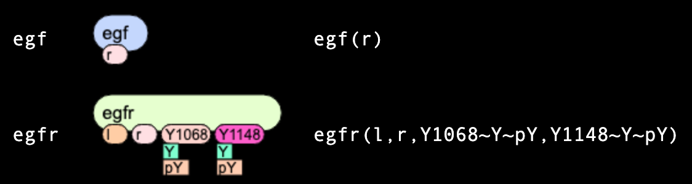
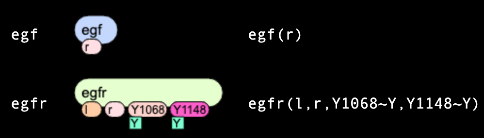
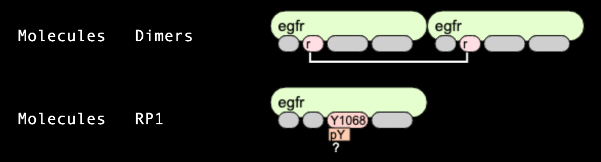

BioNetGenLanguage (BNGL) code visualizer
What is BNGL?
Rule-based modeling is based on the representation of biological objects (declared as molecules but in fact
may be representing any objects from protein domains to humans or ecosystems) as objects with a set of attributes
(called sites) that may take a finite number of states.
Molecular interactions are defined as rules for transforming the attributes of these objects.
The approach allows one to systematically incorporate site-specific details about protein-protein interactions
into a model for the dynamics of a signal-transduction system [ref],
but the method has other applications as well, such as following the fates of
individual carbon atoms in metabolic reactions [ref].
A rule-based models are defined in several languages (BioNetGenLanguage BNGL [ref], Kappa language [ref], ML-rules [ref]) and can be processed
by several software tools such as BioNetGen, Kappa, .... Here, we focus on easy visual representation of
rule-based model specified in the
BioNetGen language (BNGL).
Molecules
In the EGFR model [ref] we consider several molecules. Here we consider in details two: "egf" molecule (ligand) has a single site "r",
while "egfr" molecule (receptor) has four sites: "l", "r", "Y1068" and "Y1173". Two last sites
can be in two mutually-exclusivestates each: either "u" or "p".

Species
In rule-based modeling, like in agent-based modeling, simulations start with the certain set of seed species.
Here we describe two: "egf" species is identical to "egf" molecules, but "egfr" species must have states of sites
being uniquely defined. In the example below, both "Y1068" and "Y1073" sites have a state "u".

Observables
As each species includes all details on levels of protein domains, it often necessary to group species into pools
of "observables" having the same features. In the example below, the first line defines an observable "dimers" that
has two "egfr" molecules connected through "r" sites. Other sites are shown in grey, which means they can be
connected in any states (for "Y1068" and "Y1173" sites) or be connected to any other molecules. The second observable "RP1"
defines all species that have "egfr" molecule as part of them, with site "Y1068" being phosphorylated,
but possibly bound or unbound to other molecules.
